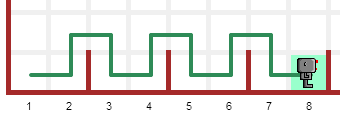

Reeborg's World
Teaching tricks.
Reeborg's World
Teaching tricks.
Important: before clicking on any link, if you are currently using any code saved in your library, you may want to open Reeborg's world (safe link: will not change your saved code!) in a separate tab so that the code will be there. Once you are done with the examples linked from the page you are reading, you will simply have to execute the code in the other tab to restore your library content in your browser's local storage.
Teaching tricks!
Important: Reeborg's world is in a bit of a flux. If you find something that does not behave as expected, or if you'd like to see some new feature implemented, please contact me.
So, you are using Reeborg's World to teach Python (or Javascript). You will find here a few "tricks" that are likely not mentioned in the tutorials and which you may find to be useful.
- Random choices
- Different traces
- Replacing the default robot
- Using "hidden" features from OOP
- Adding code to be run in addition to user's program
- Enhanced goals
- Modifying the UI using specially crafted permalinks
Random choices
If you look at the graphical world editor in details, you will see that it is possible to design worlds that have randomly assigned initial configurations, including goals. For example, this world has Reeborg possibly starting from 3 different positions, with an unknown initial location. Reeborg must collects all tokens (unknown initial number - but we know the possible range of values) and end at one of two possible final positions - determined randomly each time. Can you write a program that will work in all cases?
Different traces
By default, Reeborg leaves a trace slightly "off-center", thus showing clearly a difference between a left turn and a right turn
(done by doing 3 left turns). Perhaps you want to show the path taken by Reeborg, without giving any hint about
using 3 left turns to turn right, like this:

This can be done using the following code:
RUR.vis_robot.set_trace_style("thick")
Alternatively, suppose you wish to show the robot accomplishing its task but without leaving a trace behind. You can use "none" instead of "thick" to do this. (The normal case would be "default"). For long running tasks which you wish to demonstrate on the screen without leaving a trace, you can use this trick together with think(0).
Click on this link to see an example. You may want to replace "thick" by "none" or "default" between each run.
Replacing the default robot
Suppose you want to use a robot that can has enhanced capabilities in one of your examples while using an existing world. For instance, suppose I want to show a solution to jumping over the hurdle with a robot that can turn right directly, without doing three left turns. One "obvious" way might be as follows:
- Create a copy of the desired world.
- Remove the robot
- Save the world under a different name (if using the same browser to show the example) or a usb key (and load it in a different browser, if planning the work at home and using it in the classroom)
- Write a program that first creates a robot with the desired attributes
This approach would work ... except that the world initially shown will not have any robot visible and would thus be different than what the students would see when they would attempt to work on it with their robot.
There is a better way!
You can use the instruction
RUR.world.__remove_default_robot()
as the very first instruction in your program, and then create an instance of your robot with the desired enhanced capabilities. Since there will be only one robot in the world, basic instruction like move() or turn_left() will work on your robot as-is: by design, they work with the first robot created without requiring the instance name. So, in an empty world:
reeborg = UsedRobot() # first robot created karel = UsedRobot() move() # equivalent to reeborg.move()
This link show an example, with a robot that can turn right directly, with some code "hidden" in the library. The idea of this example is to show the path taken by the robot without giving hints as to when multiple left turns must be done.
Using "hidden" features from OOP
By reading the more advanced tutorial on OOP, you might be able to design a robot having enhanced capabilities useful for demonstrations.
Adding code to be run in addition to user's program
When editing the world, you can add a extra code that will be run either before the user's program is run, or after it is run, or both.
Enhanced goals
You know that you can set some "goals" for Reeborg to accomplish using the graphical world editor. When a world is designed to contain goals, at the end of the program's execution, the state of the world is compared with that expected from the goals, and a pop-up dialog is shown, indicating how each goal was met.
Reeborg's world includes a non-documented function called verify() in the English version, and confirmer() in the French version, which can be used to perform some other tests (a fairly comprehensive example will be provided below via a link).
In order for this utility function to be available in both Javascript and Python, it has been written in Javascript. As a result, not
all Python code is possible. As you know, in Python, chained comparisons such as:
0 < x < 5
are possible; however, this is not the case in Javascript. So, we would write intead:
0 < x and x < 5
If you know Javascript, you know that the logical "and" parameter is "&&" ... so you may wonder how we can use "and". The reason (if you look at the code below) is that a simple replacement is made, where " and " is replaced by "&&" so that Python programs using verify() can be written in a more natural way. Note that all Python logical operators ("and", "or", "not") should be surrounded by spaces for the replacement to take place.
Rather than trying to explain the various options in word, I encourage you to have a look at this comprehensive example and change some values to see it fail.
Addendum
The following is the code that is currently used (at the time of writing this page) for the function mentioned above.
// English version - as it existed when this page was written
verify = function(test) {
var reeborg, robots, world, tokens, orientation;
var east, East, west, West, north, North, south, South;
var js_test;
east = East = RUR.EAST;
west = West = RUR.WEST;
north = North = RUR.NORTH;
south = South = RUR.SOUTH;
world = RUR.current_world;
robots = world.robots;
reeborg = robots[0];
tokens = reeborg.tokens;
orientation = reeborg.orientation;
// if language is Python ... require spaces around logical operators to simplify
js_test = test.replace(/ and /g, '&&');
js_test = js_test.replace(/ or /g, '||');
js_test = js_test.replace(/ not /g, '!');
// True and False should not necessary to use ... but just in case
js_test = js_test.replace(/False/g, 'false');
js_test = js_test.replace(/True/g, 'true');
if (eval(js_test)){
return;
}
throw ReeborgError("Failed: <br>"+test);
};
// Equivalent French version
confirmer = function(test) {
var reeborg, robots, monde, jetons, orientation;
var est, nord, sud, ouest;
var js_test;
est = RUR.EAST;
ouest = RUR.WEST;
nord = RUR.NORTH;
sud = RUR.SOUTH;
monde = RUR.current_world;
robots = monde.robots;
reeborg = robots[0];
jetons = reeborg.tokens;
orientation = reeborg.orientation;
// if language is Python ... require spaces around logical operators to simplify
js_test = test.replace(/ and /g, '&&');
js_test = js_test.replace(/ or /g, '||');
js_test = js_test.replace(/ not /g, '!');
// True and False should not necessary to use ... but just in case
js_test = js_test.replace(/False/g, 'false');
js_test = js_test.replace(/True/g, 'true');
if (eval(js_test)){
return;
}
throw ReeborgError("Échec : <<br>"+test);
};
Modifying the UI using specially crafted permalinks
This is for advanced teachers who may wish to have their students using a simpler looking version of the site by using custom css. It is assumed that you know how to change css values using either standard Javascript or jQuery.
The suggested way is to open Reeborg's World into a separate tab and enable the javascript console. Then, use Javascript/jQuery commands in the console to change the UI as desired. Copy all of your required code (not forgetting semi-colons...) into the textarea below.
For example, suppose you wanted to hide the set of buttons (enabling world edition, saving, etc.) below the world; you could do so using the following jQuery code:
$("#world-edit-buttons").css("display", "none");
You can use the above as an example and copy it into the textarea below and then click the "Create permalink code" button; the result will appear below the button. Note that you need to create all the UI changes into a single conversion. Once you have the result, copy it and append it to a "normal" permalink created within Reeborg's World; your new permalink, when used to update Reeborg's world, will make the required changes to the UI.